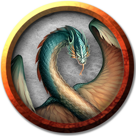

Couatl
Couatls are benevolent serpentine beings of great intellect and insight. Their brilliantly colored wings and gentle manner speak to their celestial origins.
Divine Caretakers. Couatls were created as guardians and caretakers by a benevolent god not worshiped since the dawn of time, and which is forgotten now by all but the couatls themselves. Most of the divine mandates given to these beings are long since fulfilled or failed. However, a number of couatls still watch over ancient power, await fulfillment of prophecy, or safeguard the heirs of creatures they once guided and protected. Regardless of a couatl's task, it prefers to remain hidden, revealing itself only as a last resort.
Truth Tellers. A couatl can't lie, but it can withhold information, answer questions vaguely, or allow others to jump to the wrong conclusions if doing so is necessary to protect something, to keep promises, or to hide the secret of its existence.
Ancient and Few. A couatl can live for ages without sustenance, even surviving without air, but these creatures can die of disease or the passage of time. A couatl can sense its end up to a century beforehand, but it has no insight into the manner of its demise.
If a couatl has already accomplished what it set out to do, it accepts its fate. However, if its imminent death endangers the completion of its goals, it actively seeks out another couatl with which to produce offspring.
The mating ritual of couatls is a beautiful and elaborate dance of magic and light, which results in a gem-like egg from which a new couatl hatches. The parent that sought out the mate raises the newborn couatl and instructs it as to its duties, so that it can complete whatever task the parent leaves unfinished.
Environment
Extraplanar, Conjured/Summoned
Token

Couatl
Medium celestial, lawful good
- Armor Class 19 (natural armor)
- Hit Points 97 (13d8 + 39)
- Speed 30 ft., fly 90 ft.
STR DEX CON INT WIS CHA 16 (+3) 20 (+5) 17 (+3) 18 (+4) 20 (+5) 18 (+4)
- Proficiency Bonus +2
- Saving Throws Con +5,Wis +7,Cha +6
- Damage Vulnerabilities
- Damage Resistances radiant
- Damage Immunities psychic; bludgeoning,piercing,and slashing from nonmagical attacks
- Condition Immunities
- Skills
- Senses truesight 120 ft.,passive Perception 15
- Languages all,telepathy 120 ft.
- Challenge 4
Innate Spellcasting. The couatl's spellcasting ability is Charisma (spell save DC 14). It can innately cast the following spells, requiring only verbal components:
At will: detect evil and good, detect magic, detect thoughts
3/day each: bless, create food and water, cure wounds, lesser restoration, protection from poison, sanctuary, shield
1/day each: dream, greater restoration, scrying
Magic Weapons. The couatl's weapon attacks are magical.
Shielded Mind. The couatl is immune to scrying and to any effect that would sense its emotions, read its thoughts, or detect its location.
Actions
Bite. Melee Weapon Attack: +8 to hit, reach 5 ft., one creature. Hit: 8 (1d6 + 5) piercing damage, and the target must succeed on a DC 13 Constitution saving throw or be poisoned for 24 hours. Until this poison ends, the target is unconscious. Another creature can use an action to shake the target awake.
Constrict. Melee Weapon Attack: +6 to hit, reach 10 ft., one Medium or smaller creature. Hit: 10 (2d6 + 3) bludgeoning damage, and the target is grappled (escape DC 15). Until this grapple ends, the target is restrained, and the couatl can't constrict another target.
Change Shape. The couatl magically polymorphs into a humanoid or beast that has a challenge rating equal to or less than its own, or back into its true form. It reverts to its true form if it dies. Any equipment it is wearing or carrying is absorbed or borne by the new form (the couatl's choice).
In a new form, the couatl retains its game statistics and ability to speak, but its AC, movement modes, Strength, Dexterity, and other actions are replaced by those of the new form, and it gains any statistics and capabilities (except class features, legendary actions, and lair actions) that the new form has but that it lacks. If the new form has a bite attack, the couatl can use its bite in that form.